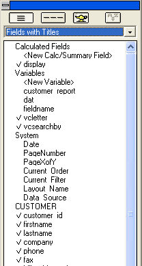

Page Numbers and Dates
You may use the <span class=Screen>Drag-and-Drop List</span> to place objects on a layout of any type:
Form
Browse
Report
Label
Letter
The objects that you may place include:
Fields from the current table or set
Calculated fields
Page numbers
The current date
The current record number
and other system fields

To insert page numbers on a layout, either drag the
PageNumber field from the System section of the Drag-and-Drop List onto the layout, or create a new calculated field using the expression:
|
PAGENO( ) |
 Note : You can also
drag and drop the PageXofY field onto the layout.
This field prints the current page number and the total number of pages
in the layout. For example, page 3 of 25.
Note : You can also
drag and drop the PageXofY field onto the layout.
This field prints the current page number and the total number of pages
in the layout. For example, page 3 of 25.
The calculated value you create calculates the page number for each physical page of the layout.
Inserting Page Numbers in Reports
With reports, the page number is usually placed in the report page footer (see Headers and Footers for more details).
If your report has grouping levels, the
PAGENO( <a>) function can be used to count pages of a particular group. For example, you have a report which groups customers by state, and the records of customers from a particular state may span several pages. You can make the Report easier to read by inserting both the physical page number and the page number of the group.
The page number for a group resets when the group breaks. The expression for counting pages in a group is:
|
PAGENO(GROUPNAME ) |
Where GROUPNAME is the name of the group whose pages you want to count. For example:
|
PAGENO(grp->Invoice_number) |
To insert the current date on a layout, either drag the Date variable from the System section of the Drag-and-Drop List onto the layout, or create a new calculated value using the expression:
|
DATE() |
When the calculated value is created, its default format separates the day, month, and year with slashes (E.g., 11/23/1995), however you can choose from a variety of other formatting options. For example, you can display 11/23/95 as "November 23, 1995."
To set the date format, either right click on the control or select the control and choose Object > Properties. When the Field Properties dialog box appears, display the Format tab. You can choose the date format from the Format style drop-down list box. If you choose a longer date format, set the field width using the Width spin box, otherwise the date will be truncated. For example, if you choose the format style "December 31st, 1988", set the width to at least 20, or the last part of the date will be cut off. You may also have to increase the size of the field on the layout.
As an alternative, you can define a custom date format by creating a calculated value using the expression:
|
DATE_FORMAT(DATE(), FORMAT) |
See Also
Report Topics, Year, Month, Day, and Week Format Codes